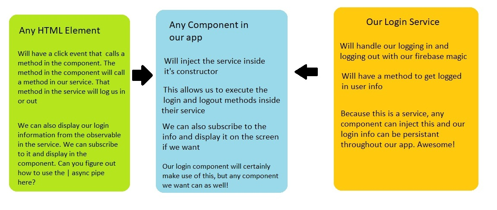
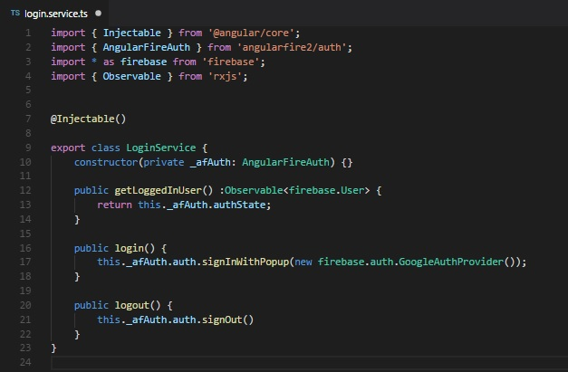

So now that we have our firebase stuff ready, we can start making our login service. Let's talk about how the flow of our login is going to go:
We want our login methods and data inside a service because by putting it into a service, we can inject it into any component we want. We will be creating a login and lgout method for sure, and only one component is likely to make use of this: Our login component.
But we're also going to create an observable that will contain the info of the user who is logged in. Sure, we can display that in our login component (and we will), but what if you want to also display that information in another component? We can just inject the service into whatever component we want to display that information and subscribe to it there. Remember that one of the main benefits of a service is that it can be injected into multiple components and share the same information.
That's pretty cool. Your paint skills, however, are still lacking.
Um, thanks?
So we'll be making a service, so lets put it inside our services folder that we made for our room service. We shall name it login.service.ts
If you want to look at your room.service to see some of the required imports, you can, but I'll still go over them. We need to import { Injectable } from @angular/core to let angular know this is a service. We will also need some firebase stuffs, as well as Observable from rxjs to let us type our observable. Here's my list of imports:
import { Injectable } from '@angular/core';
import { AngularFireAuth } from 'angularfire2/auth';
import * as firebase from 'firebase';
import { Observable } from 'rxjs';
Next, remember that we need an injectable decorator and that we can leave it blank.
@Injectable()
Finally, we will export our class, and we shall name in LoginService
export class LoginService { }
Our base work is done. Now we need to bring in the AngularFireAuth service. By now, hopefully you remember where it is in our class that we inject our service: The parentheses () of our constructor:
constructor(private _afAuth: AngularFireAuth) { }
This line injects our AngularFireAuth and assigns it to the variable _afAuth. We made it private because only our login service should have access to that variable.
Next up, we will be creating methods that we can call to log someone in, and a second one to log someone out. These will both be public since we want any component to have access to these methods.
One nice thing is that our intellisense will kick in and show us all the stuff we can use. Start typing this._afAuth.auth. and then you can see all the different ways we can sign in. The one be are looking for is signInWithPopup.
The last part is that this signInWithPopup method wants a provider. We can supply one using the firebase we imported earlier: new firebase.auth.GoogleAuthProvider()
Here is the end result:
public login() {
this._afAuth.signInWithPopup(new firebase.auth.googleAuthProvider());
}
Login on one line? Sweet. Our logout should be even simpler, instead of calling signInWithPopup, we can just call signOut instead. And signOut will not require to pass in anything, it just signs us out from whatever provider we previously chose. Here's the end result of that:
public logout() {
this.afAuth.signOut();
}
That wasn't so bad. Now we want to create a method to return the information of whoever is logged in. We know it will return an Observable, so we should dictate that in the method. Fortunately, our _afAuth service provdes this observable for us: authState. All we have to do is return it:
public getLoggedInUser() :Observable<firebase.User> {
return this._afAuthState;
}
Note that we declared this would be returning an observable of type firebase.User that we brough in up top.
We've done what we set out to do: created methods for logging in and out, and a method for returning our user info. This is all good, but there's one more step we need to complete our service, it has to be registered in our app.module like most things. Do you remember where it goes?
It belongs in the providers array of our app.module decorator. We used to have our RoomService here, but we moved it out when we refactored our rooms. Now we can put our LoginService here. Failing to do so will igve us an error when we try to inject this service in the console about not having a provider.
Our service is now ready to go. Next lesson we will apply that service in our login component. Here's a screenshot of my login service to help you out.
